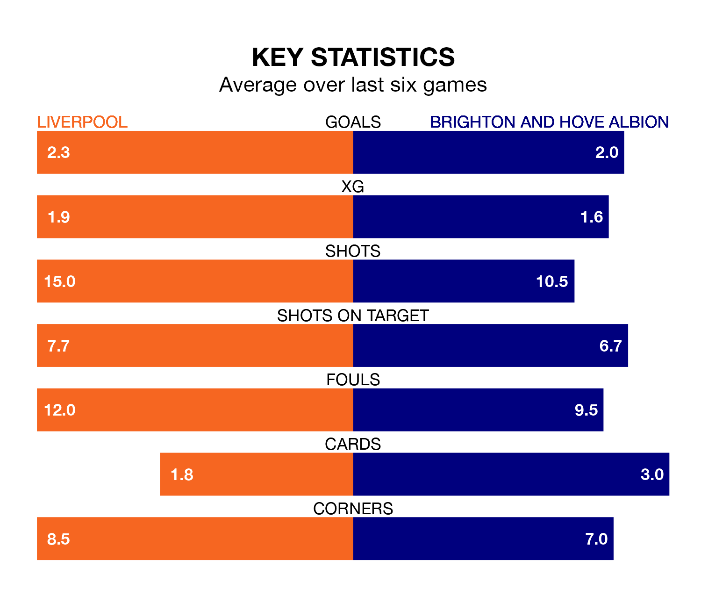

Liverpool are heavy favourites to keep all three points at home in Sunday's early kick-off against Brighton and Hove Albion.
The Reds, who sit second in the Premier League with 28 games played, are priced at 1.4 to seal victory at Anfield.
Sitting seven places and 22 points behind them in the table, Brighton are 7.0 to win with *Betting Company*, while the draw is at 5.5.
With 65 goals in 28 games so far this season, Liverpool are the league's second-highest scorers with 2.3 goals per game. And they are conceding fewer than average, letting in 26 goals at a rate of 0.9 per game.
Brighton are also above average scorers, with 1.8 goals per game, compared to a league average of 1.6. They have conceded 1.6 goals per game.
In the last 10 years, Liverpool and Brighton have played each other on 14 occasions. Liverpool won seven of them, Brighton three, and they drew four times.
On average, the Reds scored 1.9 goals and Brighton 1.2 in those matches.
Their last meeting was on October 8, when they played out a 2-2 draw.
Albion's Pascal Groß is the league's most creative player, racking up 10 assists in 26 appearances so far this season.
For the Reds, Mohamed Salah has set up the most goals, having laid on nine assists in 22 games.
The hosts are in good form in the Premier League, with four wins and a draw from their last six games.
With three wins and a draw over that period, the away team's form is worse – they have taken 10 points from 18, compared to Liverpool's 13.
Liverpool's last match was on March 10, a 1-1 draw against Manchester City, with Alexis Mac Allister getting the goal for the Reds.
Brighton beat Nottingham Forest 1-0 last time out, also on March 10, with Andrew Omobamidele on the scoresheet.
Sunday's match will be refereed by David Coote, who has taken charge of 12 Premier League games so far this season, issuing three red cards and booking 63 players. He has awarded four penalties.
The last Brighton game Coote refereed was the 4-1 win at home against Luton Town on August 12. He is yet to oversee a match featuring Liverpool this season.
Updated: 10:31 (UTC), 31/03/24